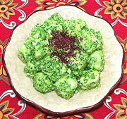

|
Fresh Cheese with Cilantro MojoSpain - Canary Islands - Queso Fresco con Mojo de Cilantro | ||||
| Makes: Effort: Sched: DoAhead: |
** 4+ hrs Must |
A tapa / appetizer of marinated fresh cheese, popular in Spanish tapas bars. The Cilantro Mojo (pronounced "moho") gives the cheese a wonderful light herbal flavor. | |||
|
|
1 1/4 |
# c |
Fresh Cheese (1) Mojo de Cilantro (2) |
Make - (4 hrs+ - 10 min work (exclusive of mojo))
|